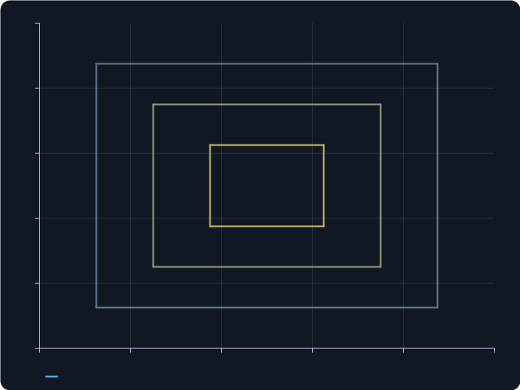
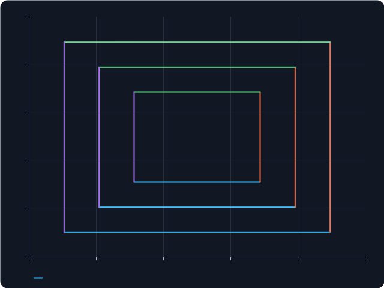

Fixture mesh and all three isoline levels agree. Moxi accepts supplied meshes; upstream computes Delaunay connectivity. Arbitrary mesh parity is unverified. Axis padding, palette, grid and missing Moxi labels differ.


Offscreen Canvas outputs and local browser replay, 640×480 charts. Moxi uses its explicit data extent; upstream adds 5% axis padding with supplied coordinates. No native input, physical input, GPU, accessibility usability, independent scientific review or performance acceptance is claimed.
Upstream 377b519e07f017d4a120b7fc3551f972a0b3fe16; Moxi 424126e12385c1cc74335e2384b6bc90fb084f9a with recorded uncommitted source fingerprint 9adc6182d6d97f425bd23f62013140468cae4b4624271184f275ead7a64eb8d7.